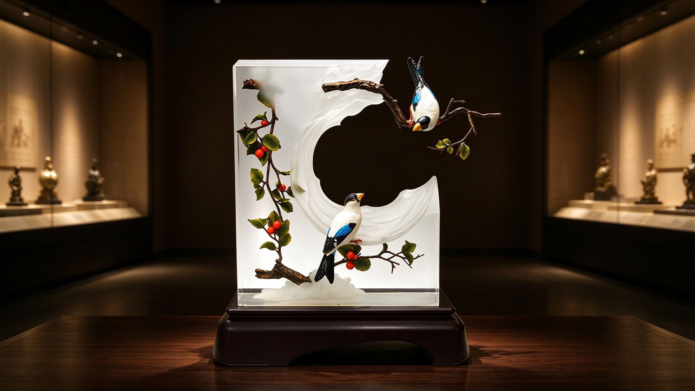

瓷
法藍瓷圖庫
FRANZ COLLECTION · ARCHIVE
所有作品 ▾
— 所有作品 · 全分類彙整 —
作品功能
瓷瓶
273 件
瓷偶/擺飾
127 件
其它
44 件
杯盤組
38 件
瓷盤
27 件
茶壺
24 件
椒鹽罐
16 件
燭台
9 件
相框
3 件
送禮情境
給長輩
124 件
給友人
119 件
開業大吉
109 件
新居入厝
92 件
給親人
90 件
升遷榮調
99 件
婚禮祝福
87 件
給情人
83 件
新生喜悅
59 件
生活靈感
療癒小物
70 件
午茶時光
56 件
居家品味
47 件
餐桌美學
29 件
尊榮典藏
限量逸品
127 件
梵谷美術館聯名
23 件
故宮博物院聯名
22 件
藝術晶雕
8 件
主題鑑賞
自然
249 件
吉祥
90 件
時尚
64 件
博物館
48 件
經典
48 件
生肖
45 件
經典系列
寫意人生
15 件
旺富木槿
12 件
飄然忘憂
12 件
蝶舞
10 件
鵲躍
5 件
幸福珍藏
3 件
作品功能 ▾
— 作品功能 —
瓷瓶
273 件
瓷偶/擺飾
127 件
其它
44 件
杯盤組
38 件
瓷盤
27 件
茶壺
24 件
椒鹽罐
16 件
燭台
9 件
相框
3 件
送禮情境 ▾
— 送禮情境 —
給長輩
124 件
給友人
119 件
開業大吉
109 件
新居入厝
92 件
給親人
90 件
升遷榮調
99 件
婚禮祝福
87 件
給情人
83 件
新生喜悅
59 件
生活靈感 ▾
— 生活靈感 —
療癒小物
70 件
午茶時光
56 件
居家品味
47 件
餐桌美學
29 件
尊榮典藏 ▾
— 尊榮典藏 —
限量逸品
127 件
梵谷美術館聯名
23 件
故宮博物院聯名
22 件
藝術晶雕
8 件
主題鑑賞 ▾
— 主題鑑賞 —
自然
249 件
吉祥
90 件
時尚
64 件
博物館
48 件
經典
48 件
生肖
45 件
經典系列 ▾
— 經典系列 —
寫意人生
15 件
旺富木槿
12 件
飄然忘憂
12 件
蝶舞
10 件
鵲躍
5 件
幸福珍藏
3 件
聯絡

產品圖庫
藝品圖鑑
首頁
/
產品圖庫
/
全部作品
Grid
5×20
6×25
8×25
全部品類
瓷瓶
瓷盤・碟
杯盤組
杯・對杯
碗・器皿
茶壺・壺具
餐茶具・午茶組
糖罐・奶罐
椒鹽罐・調味罐
有蓋盒・收納
燭台・燭具
餐具・食器
相框・居家飾品
人物・天使・瓷偶
動物・生肖擺飾
花果・祝福擺飾
珠寶飾品
藝術晶雕
藝術擺飾・雕塑
其他・生活器物
排序
編號 大→小
價位 低→高
價位 高→低
尺寸 小→大
尺寸 大→小
推出年份 新→舊
缺圖
典藏 全部
典藏 1+
典藏 2+
典藏 3+
典藏 4
全部
動物
268
花卉
154
寓意
38
藝術品合作
48
其他
62
瀏覽結果
法藍瓷藝品圖鑑
×
❮
❯
LINE